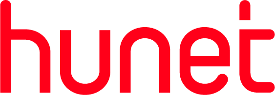

데이터를 불러오는 중...

조직 성과 체크인
연결 확인 중...
settings
관리자 페이지
edit
체크인 입력
trending_up
대시보드
event
회차 선택
event_busy
아직 진행 중인 회차가 없습니다.
관리자에게 회차 생성을 요청해주세요.
straighten
정량 지표 입력 방법
달성률 →
85%
,
120%
등 퍼센트로 작성
수치 →
17방
,
250억
,
1,200개
등 실제 수치로 작성
현재 시점에 체크인이 어려운 경우 →
체크인 보류
로 입력
star
정성 지표 등급 기준
Arete
누구나 인정할 만큼 탁월한 성과 창출
EE
목표한 성과와 조직/비즈니스 기여도가 기대 수준을
초과
ME
목표한 성과와 조직/비즈니스 기여도가 기대 수준을
충족
NI
목표한 성과와 조직/비즈니스 기여도가 기대 수준
미만
보류
현재 시점에 체크인이 어려운 경우 →
체크인 보류
선택
business
본부 및 팀 선택
본부 선택
-- 본부 선택 --
팀 선택
-- 팀 선택 --
warning
이미 제출된 체크인이 있습니다. 재제출 시 기존 내용이 덮어쓰기 됩니다.
초기화
check_circle
체크인 제출
회차:
-- 회차 선택 --
본부:
전체 본부
HAI:
전체
비즈니스 성과
비즈니스 혁신
고객행복
PWC
주요 핵심지표:
전체
매출
성장
이익
솔루션&서비스
R&D
AX
고객경험
인재밀도
조직문화
인사체계
브랜드
신사업&신상품
세부 핵심지표:
전체
refresh
새로고침
check_circle
-
체크인 완료율
speed
-
평균 달성률 (정량)
emoji_events
-
고성과 팀 (80%+)
report_problem
-
이슈 집중 본부
-
전체 팀 수
-
체크인 완료
-
체크인 미완료
-
이슈 있는 팀
-
평균 달성률
bar_chart
본부별 평균 달성률
donut_large
정성 등급 분포
business
본부별 체크인 현황
warning
이슈 현황
-
목표조정
-
신규목표
-
목표폐기
-
지원요청
-
기타
groups
팀별 체크인 현황
✕